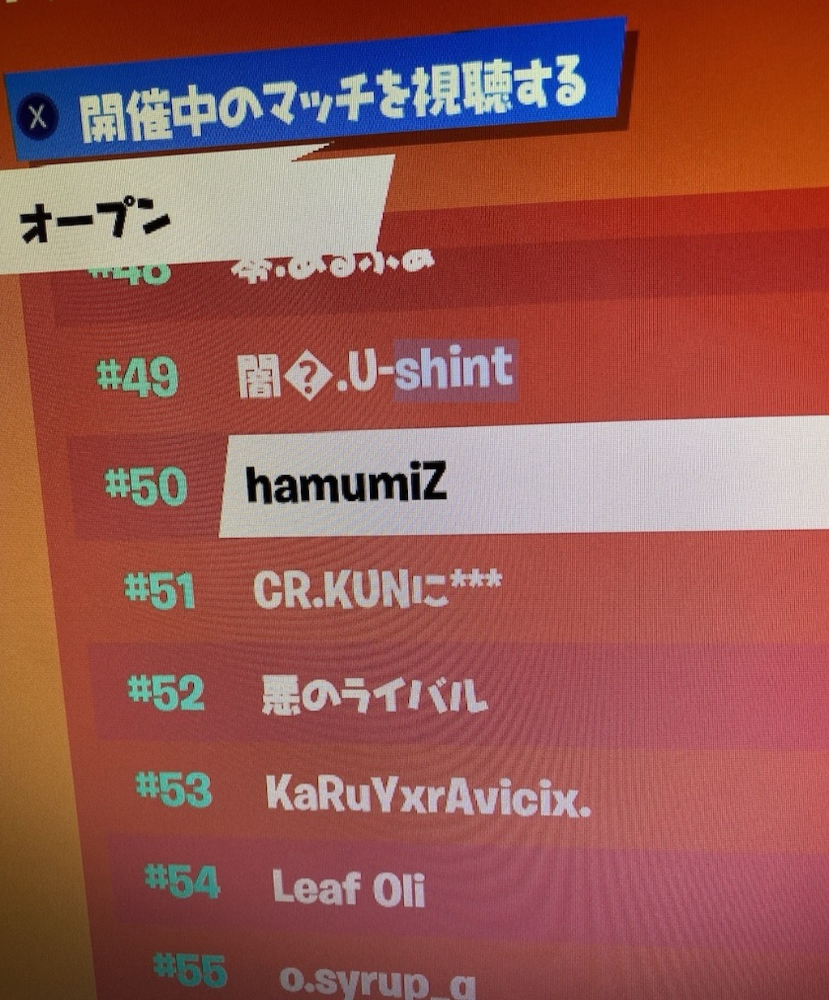

自己紹介
こんにちは！私は木村健人です。現在、開志専門職大学で、プログラミングなどの情報分野を学んでいます。
私は幼いころからコンピューターや技術に興味を持ち、それがきっかけで現在の学問を選びました。特にウェブ開発やゲーム開発に興味があり、これらを通じて人々の生活を豊かにすることを目標としています。
プロフィール画像の猫はおばあちゃん家で飼っている猫です。
趣味
1. ゲーム
私は対戦ゲームが大好きで、戦略やスピード感を楽しみながらプレイしています。最近ではVALORANTやOverwatch（OW）、ストリートファイターなどに夢中になっています。これらのゲームはチームワークや個々のスキルが重要で、毎回のプレイで新しい発見があります。
フォートナイトというゲームではオンライン大会で、なんとアジアで100位にランクインした経験があります！
(画像では50位となっていますが、最終順位がアジア100位でした)
2. ピアノ
今年の夏休みごろからピアノを始めました。ピアノを始めたきっかけは、妹が吹奏楽部で、夏休みに妹の高校の吹奏楽部の演奏を見に行った時に「楽器を弾けたらかっこいいな」と思ったことです。その日から妹からピアノを借りて練習し始めました。
現在練習しているのは、tuki.さんの「晩餐歌」という楽曲です。この曲はメロディが美しく、弾いていると心が癒されます。最近では両手で弾けるようになり、少しずつ上達を感じられるのが楽しいです。
3. YouTubeを見ること
リラックスしたいときや新しい情報を得たいときにはYouTubeをよく見ています。特に、ゲーム系の動画をよく見ます。プロゲーマーの視点や解説を聞いて、「どう考えているのか」を学ぶことがとても好きです。戦略やスキルについての理解が深まり、実際のゲームプレイにも役立っています。
YouTubeはほとんどゲーム系の動画を見ているのですが、唯一ゲーム以外の動画で毎日見ているYouTuberがいます。それはヒカルというYouTuberです。知っている人も多いと思いますが、この人の魅力は圧倒的なトーク力とその生き様にあります。
最近では芸人さんとコラボすることが多いですが、芸人さん相手でも圧倒的なトーク力を活かした会話の駆け引きが見どころです。また、「漫画のような出来事」が頻繁に起こる生き様も注目ポイントです。たとえば、いきなり大企業の社長になったり、数億円のホテルを購入したりと、普通では考えられないようなことを成し遂げています。そのため、「次は何をするのか」と先の読めない展開が非常に面白いです。興味がある方は動画時間が長くて見るのが大変かもしれませんがぜひ見てみてください！
ヒカルさんのYouTubeチャンネル連絡先
お気軽にご連絡ください。
- メール: 20123016@kaishi-pu.ac.jp
- 電話: 20123016@kaishi-pu.ac.jp
- YouTube: 私のYouTubeチャンネル